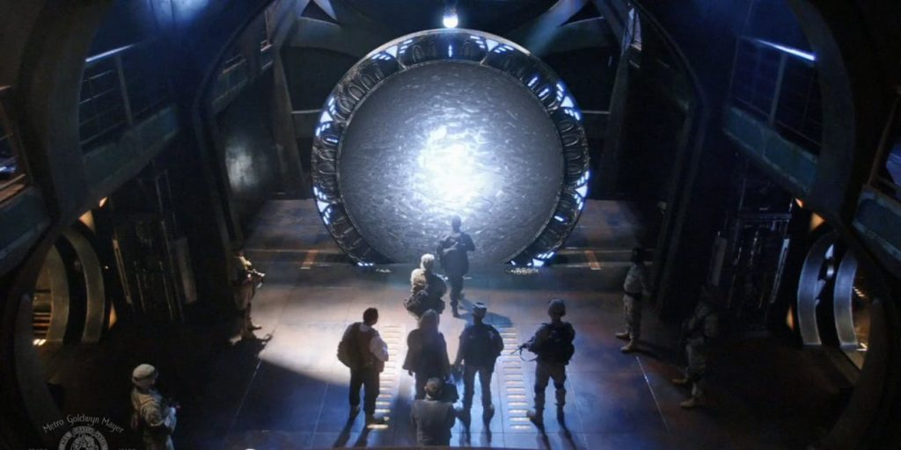
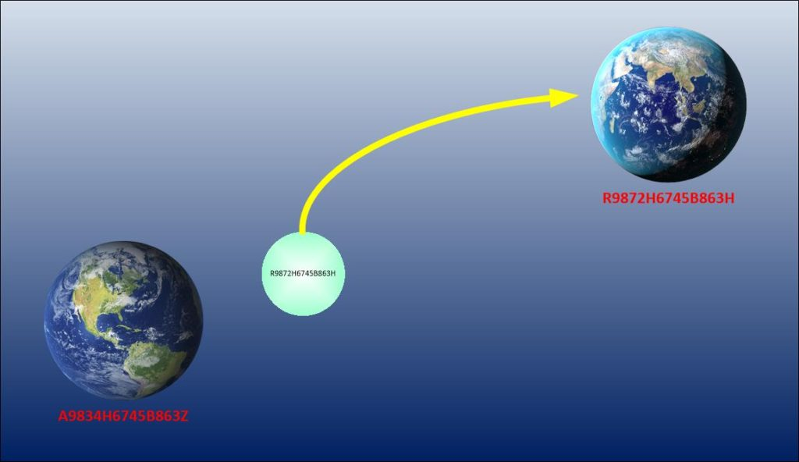
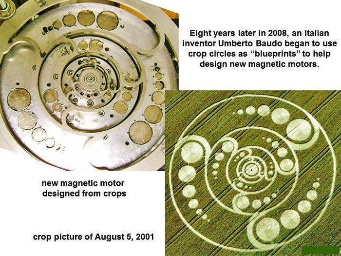
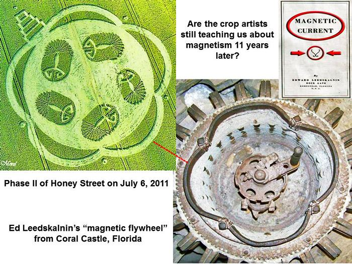
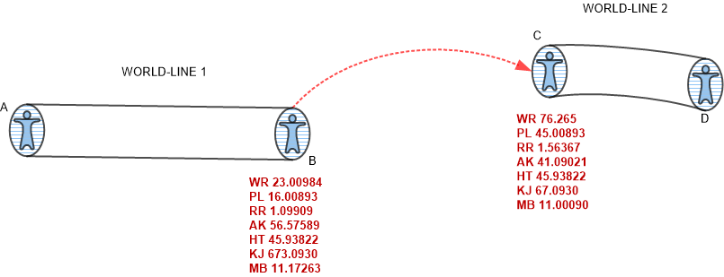

Not everyone is satisfied in using intention / prayer to alter their reality. And, not everyone has the billions of dollars to manufacture their very own dimensional portal. And not everyone can work with our benefactors to have a piloted artifice slide their world-lines about. So what options are left?
Make your own.
Redaction's posted herein are mandatory. Please do not ask for clarification. There can be no exceptions.
DIY Dimensional Portal Considerations
Our reality is one that our soul constructed for us to occupy and acquire experiences in. The influences of the thoughts of the “quantum shadows” that share our reality, color what we experience.
We, as humans, wish to “vacation” outside our reality to other realities where we can acquire new “adventures” and experiences. It is part of our nature.
Thus, the desire to explore alternate world-lines.
It seems that a lot of people want to leave their own dimension and explore alternative worlds. So instead of concentrating on their ability to control their thoughts… (thoughts steer the dimensional realities around us), they look outward for some kind of artifice or automaton to do all the “heavy lifting” for them.
Heavy Lifting; an American idiom that means to do the hard and difficult work.
It’s a lazy-man’s method. It is equivalent to buying lottery tickets in that hope that you will become a millionaire.
People, we do not need to do that. In fact, all we really need to do is control our thoughts, and then just sit back while our reality collapses in upon itself and a reality that fits our desires…
… manifests.
What if there are (more or less) natural events that can create the conditions necessary to facilitate “natural” world-line cross-over events.
Afterall, if multiple world-lines are a de facto natural state, as I say... and time is our experience of moving though these stable world-lines, could not other techniques... ...natural techniques... ...be able to provide similar results of intense consciousness navigation?
What might they manifest as?
Indeed, over the years, I’ve read articles and heard stories that refer to unusual phenomena relating to experiments with high energy concentrations in a ‘constrained’ area. This energy can be in the form of high concentrations of sound, electricity, magnetism, etc..
At this point in time, my thinking is that a direct current (unmodulated – not alternating) produces a stress on the fabric of space in a local area.
That if you create a vortex using various means, and then couple this with <redacted> (which is really the “key” to the entire process) that the stress on the world-line “bubble of reality” would be such that you could exit it and immediately transit to a different world-line.
The theory or idea behind this is that each spatial (and possibly TEMPORAL) location, no matter what dimension it resides in, has a specific coordinate (of some degree of complexity).
And as such, it can be referenced by a combination of frequencies that equate to the ‘signature’ for that location. (Perhaps, much like a “tuning fork”.)

This concept of coordinates as a function of “frequencies” is not new. It’s almost a mantra of the “New Age” movement. But what is different here is that the various frequencies and the subtleties of the harmonics involved could be manipulated as coordinates for World-Line travel.
These are nested frequencies – like bubbles within bubbles – because they are all standing waves produced by 180 degree phase conjugation.
If a modulation – representing a specific ‘signature’/coordinate – is imposed on this stress field, then a portal is opened to that location.
My (personal) concept is that a resonance is established between these two locations (there can be more), i.e. the physical-spatial location and the artificially created target.
Who knows if this speculation has any validity.
While I have been exposed to world-line travel using three techniques, I have never been officially educated on the mechanisms involved by MAJestic. All that I know is via our benefactors. Therefore, what is presented herein is not official MAJestic information, but rather my interpretations of what might be based upon what I know. Still, at that, the redactions are fixed. Some opinions that I have are too "leading", if you know what I mean.
However, there are those who earnestly believe that it is worth the time, effort to pursue and investigate.
Here are some curiosities for the more adventuresome reader. Personally, I do not know if they are worth the time to consider, but some do make for fun and interesting reading…
Alan Holt’s Field Resonance Concepts
While everyone is thinking in terms of one universe, with only one world-line and using advanced propulsion methods to get from point A to point B, the methods themselves can enable world-line crossovers.
Now, a “world-line crossover” can be called many things. It can be called “time” (if conducted naturally). It can be referred to as a “slide” if you use and extraterrestrial artifice, and it can be considered to be “resonant transfer” if you are a NASA scientist.
In line with this idea of resonant transfer are two excellent papers by Alan Holt of NASA. He has a new propulsion concept that has been developed based on a proposed resonance between coherent, pulsed electromagnetic wave forms and gravitational wave forms (or space-time metrics).
http://keelynet.com/energy/holt1.htm
All the discussions of this tend to be “really out there”. Because they all involve things that have already been “disproved” by “experts”. So in order to read these papers and follow the train of thought, you need to suppress the idea that…
- FTL travel.
- Time travel.
- Change in mass of objects.
- Change in the gravity of objects.
- Change in the inertia of objects.
- Use of “crop circles” for guidance.
- Tuning on frequencies.
…are all possible given the proper set of conditions.
Now, keep in mind that while this concept is based on the idea for propulsion techniques and technology for geographical movement within the universe, it’s (far) better application is for world-line travel.
World-line travel using Field Resonance Systems…
Space-Time/Field Relationships The new model of space-time/field interactions (A. C. Holt, "Virtual/Space-Time Manifolds," being revised before publication) will be used in this paper to describe the potential characteristics of electromagnetic/ gravitational field interactions and the performance capabilities of two basic types of field-dependent propulsion systems. The model is currently undergoing revision which could alter the description of the interactions but which will not alter the expected effects of the interactions. The primary effects are as follows: 1.A decrease or an increase of the gravitational forces acting on a space-time mass or energy system (objects, planets, magnetic fields, etc.) by altering the basic space-time structure of the mass or energy systems energy pattern (can be accomplished by artificially generating a highly energetic spatially and temporally coherent energy pattern) A decrease or an increase of the total energy in the mass or energy system by altering and fine-tuning its energy pattern to match or establish a resonance with the proposed "virtual" structure and patterns associated with a distant space-time point The translocation of an object or space-time mass/energy pattern from one space-time point to another by altering the pattern to achieve a very precise resonance with a "virtual" pattern associated with a distant space—time point While the author would prefer to wait until the model is complete and the results of initial experimental research are available before utilizing the model, he believes that the first steps toward the development of field-dependent propulsion systems must be taken in Fiscal Year 1981. The first steps are associated with the development of a field physics laboratory which can be used to investigate and quantify space-time/field interactions to achieve a breakthrough in our understanding of the relationships between gravitational and electromagnetic forces. Thus, the model is utilized in this paper to emphasize the point that a breakthrough in field physics can be achieved in the early 1980s if the required research is given a high priority in funding allocations and if a highly motivated well-qualified research team can be assembled. Rather than develop another theory which would remain untested experimentally, the author developed a theoretical model which could be easily used in a field physics laboratory to investigate space-time/field interactions. If, as a result of the experimental testing, this qualitative model is basically confirmed, then a detailed mathematical description can hopefully be developed and the model will be upgraded to a mature theory. The nuclear physicists have used this type of experimental approach to make substantial progress towards the unification of the strong and weak nuclear forces (utilizing the experimental results of particle accelerators). The model describes the gravitational force, electromagnetic forces, and mass (particles) as the variations of the characteristics of a continuous field of force. This field of force can be conceptually identified with Einsteins generalized tensor field which Einstein strived to develop to unify gravitational and electromagnetic forces in a single mathematical formalism. The field of force is defined by the interaction of space-time energy patterns (associated with particles, planets, stars, magnetic fields, etc.) and proposed virtual patterns which are associated with each space-time point and which form an underlying structure of space-time. The virtual structure at each space-time point can be conceptually approximated by a series of virtual states or patterns. The virtual structure is actually a many-dimensional structure which transcends and permeates the four dimensions of space-time. A virtual pattern can be described if it is assumed that the pattern manifests as a space-time form. If these virtual patterns undergo a type of "energization" which results in a projection into space-time, patterns such as pulsating spheroids and ellipsoids and dipole, quadrupole, and octupole forms, etc., might result. -PROSPECTS FOR A BREAKTHROUGH IN FIELD-DEPENDENT "PROPULSION" (PDF)
Now keep in mind that the idea of a “space-time” point is considered to be a geographical location that resides at a specific point in time, it is actually a coordinate related to a specific world-line within our reality universe.
Of course, we do not know what really happened regarding this.
Alan Holt retained his position at NASA and was on their payroll for many many years. An absolute flood of “black projects” came into being right after this paper was written. And simultaneously, a sorts of nonsense about the triviality of this concept hit the public narratives.
Plus the idea that genius was somehow connected with “crop circle” answers did not help…
![Saturday, September 22, 2012
Crop Circles, Amazing Thoughts By NASA Project Manager
Some years ago during the summer of 2000, a NASA Project Manager by the name of Alan Holt visited Wiltshire, and decided to look at a few crop pictures. Humorously he “put out the thought in a crop picture, somewhat as a test but really a request, that he would like to see a crop pictogram appear, which could provide some insight into the direction he should pursue in his advanced transport / field physics research activities” Two days later, a spectacular diagram of the “magnetic field near a bar magnet” appeared at Avebury Trusloe:
This is Alan Holt's Story and it is pretty amazing!
Richard](../assets/img/so-you-want-to-make-your-very-own-home-grown-dimensional-world-line-vehi-7d3f15/ed-crops1a.jpg)
Crop Circles, Amazing Thoughts By NASA Project Manager
Some years ago during the summer of 2000, a NASA Project Manager by the name of Alan Holt visited Wiltshire, and decided to look at a few crop pictures. Humorously he “put out the thought in a crop picture, somewhat as a test but really a request, that he would like to see a crop pictogram appear, which could provide some insight into the direction he should pursue in his advanced transport / field physics research activities” Two days later, a spectacular diagram of the “magnetic field near a bar magnet” appeared at Avebury Trusloe.
So we know that this paper and theory hit NASA, was part of a flood of “black projects” and was suppressed in the public domain.
So what it is?
The field resonance system artificially generates an energy pattern which precisely matches or resonates with a virtual pattern associated with a distant space-time point.

According to the model, if a fundamental or precise resonance is established, (using hydromagnetic wave fine-tuning techniques)…
… the spacecraft, vehicle, or person, will be very strongly and equally repelled by surrounding virtual patterns.
http://keelynet.com/energy/holt2.htm
Using this concept, a spacecraft “propulsion” system potentially capable of galactic and inter-galactic travel without prohibitive “travel times” has pretty much been designed. This goes further than just geographic travel, but includes travel through “time” as well.
And since “time” is just a long string of connected world-lines, this means that this technique can enable world-line travel.
Following a breakthrough in space-time/field interactions, two basic types of asymmetric propulsion systems will likely be developed. Type 1 is a "gravimagnetic" system which utilizes specific electromagnetic energy configurations to generate an artificial gravitational field (in effect). Type 2 is a "field resonance" system which relies on the use of electromagnetic energy configurations to establish precise resonances with virtual energy patterns at distant space-time points. These space-time "form resonances" result in "jumps" or translocations of the spacecraft/aircraft to the distant points.... ...In a research study completed in 1979,9 it was determined that oscillations of magnetic field lines could enhance or inhibit magnetic field line reconnection. The effect of these hydromagnetic waves is dependent on the wave frequency, wave length, wave amplitude, and wave orientation with respect to the field lines. By varying the wave characteristics and the strength and duration of the magnetic field source pulses, and by sequencing these field pulses, a wide variety of energy patterns with a high degree of spatial and temporal coherence can be generated. -PROSPECTS FOR A BREAKTHROUGH IN FIELD-DEPENDENT "PROPULSION" (PDF)
So what?
Well, aside from the obvious benefits related to physical movement, there is the relationship between electromagnetic wave forms and gravitational wave forms. Which then, of course led me to this curiosity found HERE… That’s right; let’s talk about “crop circles”.
http://www.cropcircleconnector.com/anasazi/fringe2014y.html
Alan Holt is currently a Project Manager for NASA's International Space Station: This article does not necessarily reflect the views of NASA and are the sole views of Alan Holt In July of (2000) I had the opportunity to visit the United Kingdom for a couple weeks. The primary purpose for my trip was to spend some time with my companion Hildi who lives in Glastonbury, England. Since I knew the timing of my visit would allow me to see and hopefully visit some "crop circles" I did a little exploration of web sites before I left. I was absolutely amazed at the patterns which I saw, and was wondering why these developments hadn,t surfaced in the general press in the U.S. After my visit and discussions with various people in the UK, it is now clear to me that crop "circles" or pictograms have suffered the same fate that UFOs and other phenomena have which do not fit the current paradigm. Upon arriving in London on July 20, I was picked up by my companion and a friend and on the way back to Glastonbury we stopped at the Barge Inn. The Barge Inn is located along one of the many canals crisscrossing England, and is a meeting place and informal headquarters for crop "circle" researchers and visitors. Photos of the latest crop "circles" are tacked up on a bulletin board. Outside looking toward nearby hills a simple crop "circle" could be seen. After getting something to eat, we went up to the circle and entered it. The plants on the floor of the circle were woven into a basket like pattern. Unlike the few hoaxed or manmade "circles", the stalks of the plants were not broken but looked like they had suddenly decided to bend down and grow in a horizontal direction. My assessment after visiting several crop pictograms, is that the man-made "circles" are relatively few, which are composed of simple forms having very poor geometric precision compared to the amazing pictograms. There are other factors which clearly delineate a man-made circle from the absolutely amazing pictograms, which can be learned from the web sites, and several books. I would recommend the book "Crop Circles: The Greatest Mystery of Modern Times" by Lucy Pringle,1999, Harper Collins Publishers, ISBN 07225 3855 3, $27.00. I had an opportunity to talk with Lucy at the Glastonbury Crop Circle Conference held in July 28 -30 during my visit. She personally flies out over the fields and takes photos. Since I have for many years used enhanced intuitive capabilities to pick up additional information, I did sit in the crop circle near the Barge Inn and picked up some interesting impressions pertaining to the future. In addition, I put out the thought, somewhat as a test but really a request, that I would like to see a crop pictogram appear which could provide me some insight into the direction I should pursue in my advanced transport/field physics research activities. We then went on to Glastonbury, to London, and then back to Glastonbury. Eight days later, we went back out into crop circle country and again visited the Barge Inn. On the bulletin board, was an astounding new pictogram l The pictogram was shaped like a bar magnet, with magnetic field lines coming out of the north and south poles. The pictogram had appeared on July 22 two days after my arrival in the England (and my first visit to the Barge Inn). We determined its location, visited the pattern and spent a lot of time exploring it. The precision and intricacy of the pattern was stunning. Even the farmer whose field the pattern had appeared in was overwhelmed by this pictogram. He indicated that there had been other patterns in his field before, but he had still harbored some doubts concerning who or what had made them. But with the appearance of this pictogram, he knows now that this is a true mystery. From his perspective there is NO possibility that this was made by humans or our technology, and I agree with him. While in the pattern, I recalled the thought which I had sent out for a pictogram to appear which could provide some direction for my research activities. I have to conclude that whatever intelligence is responsible for these patterns, it has connections with or links with our human consciousness. There is truly an astounding phenomena unfolding in England and elsewhere in the world. Its very unfortunate that the unscientific thinking, and perhaps deliberate disinformation, of a few individuals have been picked up and accepted by a naive press world-wide. As a result millions of people have been deprived of the opportunity to experience a consciousness expanding phenomena. It is our civilization,s loss; but fortunately the apparently successful attempt to ridicule or "debunk" crop circles will do nothing stop what may be a major transformation ahead for humanity. From my perspective, there is also a warning or "be prepared" message coming through the crop pictograms as well. We have not been very good stewards of the planet on which we are living. We have recklessly depleted resources; contaminated water, air and Earth; threatened the foundation of Earth,s viability with the use and testing of nuclear weapons (and perhaps other exotic technology) and continue to waste at least one-half of what we produce (especially here in the U.S.). The Earth can compensate for some of our mistakes, but it too goes through transformations. If our care of our planet is not dramatically improved soon, we may not have many more years to enjoy the beauty and nurturing environment which even now the Earth still provides (the year 2012 could be a turning point).

The field resonance system artificially generates an energy pattern which precisely matches or resonates with a virtual pattern associated with a distant space-time point. According to the model, if a fundamental or precise resonance is established (using hydromagnetic wave fine-tuning techniques), the spacecraft will be very strongly and equally repelled by surrounding virtual patterns. At the same time, through the virtual many-dimensional structure of space-time, a very strong attraction with the virtual pattern of a distant space-time point will exist. The model predicts that this combination of very strong forces will result in the translocation of the spacecraft from its initial position through the many-dimensional virtual structure to the distant space-time point. The mechanics of this resonance effect will be determined through extensive experimentation, which may also revise the basic resonance requirements. However, the result, a space-time "jump," already appears to be supported by astrophysical research. Several analogies can be used to clarify this effect. It can be described as the temporary formation of an Einstein-Rosen bridge, a tunnel through space-time which connects two different regions in space-time in a way similar to that which has been proposed for a black hole/white hole (quasar) connection. The resonance effect can be considered to be analogous to the nuclear particle tunneling phenomena. In this phenomenon, the wave nature of the particle enables it to tunnel through a potential barrier without having the energy required to go over the barrier. Following this analogy, the spacecrafts wave characteristics are increased dramatically by the artificially generated energy pattern, allowing it to tunnel through the space-time barrier without having the energy normally required to traverse the space between the two space-time points. The travel times for such trips are expected to be short (seconds to weeks) and dependent on the pattern precision, the amount of energy in the pattern, the space-time distance, and the virtual structure entry point. Time does not have on independent existence in the General Theory of Relativity and it will be redefined in the model as a type of energy flow. However, since time will continue to be used to catalogue our experiences in daily life, its use is likely to continue in the description of this type of long-distance travel. If the artificial energy pattern does not precisely match the virtual pattern at a distant space-time point, a secondary resonance effect may be observed. In this case, the repulsive and attractive forces are not strong enough to relocate the spacecraft, but the resonance is sufficient to connect the two points through the virtual structure, resulting in an energy flow to or from the distant space-time point. By the selection of appropriate pattern characteristics, the energy pattern can gain energy which can be simultaneously transferred to energy storage and supply systems. For field resonance spacecraft going outside the Earth/Moon system, this technique for maintaining the energy supply could be very useful. The energy recharging process could be accomplished as a preparatory procedure prior to the initiation of the primary resonance. At a particular stage of the fine-tuning process, the energy pattern could be put into a hold, allowing the pattern to acquire additional energy and charge the energy storage device. At the same time or even preceding this stage, information in the form of the characteristics of energy decreases or increases (space-time energy spectral data) might be used by a sophisticated guidance and control system. The system could use this information to compute final fine-tuning requirements and to verify the location of the virtual patterns space-time association. While these ideas are quite speculative, they do point out that there are potential technical solutions to problems which might otherwise seem to prohibit such travel. -PROSPECTS FOR A BREAKTHROUGH IN FIELD-DEPENDENT "PROPULSION" (PDF)

A lot here, and it’s all “out there”. I think I’m gonna grab a beer.
The Mandala/Mantra Connection
Incunabula Files / Ong’s Hat refers to a mandala/mantra coordinate system which is used to transport the subject to one of unlimited parallel, other reality Earths.
- About – The Incunabula Papers: Ong’s Hat and other …
- DOWNLOAD THE AUTHORIZED EDITIONS OF ONG’S HAT BOOKS …
- Ong’s Hat: The Beginning by Joseph Matheny
- Ong’s Hat The Beginning Joseph Matheny – Internet Archive
- Ong’s Hat: The Early Internet Conspiracy Game That Got Too …
- Ong’s Hat: Piney Ghost Town or Gateway to Another …
The principle applies to mass transfer from one set of coordinates to another set of coordinates.
http://www.textfiles.com/bbs/KEELYNET/UNCLASS/ongshat.asc

Sounds “cool” huh? It would refer to a coordinate system to transport a person to alternative world-lines. Heck, I’d buy into it. For even with my probes, the ability for me to select and choose the target destination (that I’d desire) using manual world-line coordinates has always been <redacted>.
Now, this system has benefit, in that it is very similar <redacted>.
<redacted>
<redacted>
Now the story behind this use of “Magik” to create self-induced slides between realities is like a page out of the Heinlein Novel “Glory Road”. And as such, perhaps you the reader should hear the full story…
It all started with a road map of New Jersey. A little north of the Red Lion Circle, in the heart of the Burlington County Pine Barrens, the map depicted a tiny hamlet marked with the unusual name of “Ongs Hat.” In the early 1930s, Henry Charlton Beck, a reporter with the Camden Courier Post, became curious. After convincing his editor that a story could be found there, he and a photographer packed up a car and set off to investigate.[1] Little did he know that his explorations at Ongs Hat, and a succession of later voyages to mysterious places in the hinterlands of New Jersey, would inspire generations of other “lost town hunters” –pouring over ancient maps, exploring dismal cellar holes in the middle of nowhere, and sharing their discoveries with one another – first by telephone and letter and presently through online forums. In Beck’s time, the best way to Ong’s Hat was the rough tarred road out of Pemberton. Little travelled, the long, slow road passed through miles of bleak forest, cranberry bogs, and forlorn cedars where scarce a human foot had trod. Only a dusty clearing betrayed the location of where the town once stood. Today, the road still follows the same route, but it is now well-maintained asphalt. Want to go? Just travel south from Pemberton, past the old Magnolia Road Tavern, until you come across a restaurant on your right hand side. You’ve arrived in Ong’s Hat – miles away from anywhere. Blink and you’ll miss it. The story of Ong’s Hat begins long before the birth of our nation. On February 5, 1631 the ship Lyon arrived in Boston Harbor from Bristol, England. The settlers on board included Francis Ong, of Suffolk County, England; his wife Francis; and children Simon, Jacob, and Isaac.[2] Members of the Society of Friends, the Ongs left England seeking religious tolerance in the Massachusetts Bay Colony.[3] Isaac and his wife, Mary, moved to Burlington County around 1688, eventually settling on a plantation in Mansfield Township. They had five children: Jacob, Jeremiah, Isaac Jr., Sarah, and Elizabeth. On June 13, 1696 Jacob Sr. died, leaving his plantation and other property to his second wife, Sarah.[4] Jacob Ong was born on his father’s plantation around 1672, and followed in his footsteps as a farmer. An early court case in 1698 tells of Jacob being accused of riding his horse at a gallop “in the fair time Betwixt the Market house and the water side” in Burlington City – charges that were eventually dropped when nobody appeared in court to prosecute.[5] Sometime after 1699 he left Mansfield, following his sister Sarah and her new husband, Edward Andrews, to Egg Harbor.[6] The forlorn cedar swamps along the Stop the Jade Creek called to Jacob, and in 1700 he purchased 100 acres of land in Northampton Township, encompassing the area that would later be known as Ong’s Hat.[7] There is no evidence that he ever intended to build a home there. It’s more likely he realized that he could make good money harvesting the cedars on his land. So what about the hat? The oldest maps simply show the location as “Ongs.” Thomas Gordon’s Gazetteer of 1834 seems to be the first published source in which the town gains its puzzling surname. The Magnolia Road Tavern, just north of Ong's Hat. Several theories abound explaining the unusual name. The most famous recounts Jacob Ong as a type of dandy, as best as the eighteenth century could produce, that regularly visited the local tavern. Jacob was quite the charmer and known for wearing a fine silk hat. One night he seems to have gotten on the wrong side of his dance partner who, in a fit of anger, snatched the hat from Jacob’s head and stomped on it in the middle of the dance floor. This story can be discounted, as a tavern was not located here until the early 1800s. Another story is that Ong’s Hat is a misspelling of Ong’s Hut, and that the Ong family built a hut or some other structure as a convenient stopping-over point between Egg Harbor and Burlington or Mansfield. I find the most plausible theory to be one concerning the tavern at Ong’s Hat. Isaac Haines was one of the first recorded tavern keepers in the area, establishing his business circa 1800.[8] In the days where many people could not read, an identifying mark was more valuable than words. It doesn’t stretch the imagination to picture the tavern keeper painting a large hat on a crude pine board and hanging it from a pole to announce to passersby that they had reached the “Ong’s Hat Tavern.” The town of Ong’s Hat soldiered on in relative anonymity until tragedy struck. About 1917, a pine hawker named John Zimbacke and his wife mysteriously disappeared from their small cabin. Nine years later, brothers Orville and Joseph Carpenter came across the skull of the woman while hunting for deer along the fringes of a cranberry bog north of Ong’s Hat. Arriving on the scene, Burlington County detectives, led by Ellis Parker, found the bones of John scattered by buzzards across nearly two miles. Suspicion fell to the couple’s son, who disappeared shortly before his parents went missing.[9] The trail led Parker to New York City where, unfortunately, it went cold. It has been said that Parker kept the skull of the woman in his office as a reminder of the case he was unable to solve.[10] Eight years later, another crime brought Ong’s Hat back to the headlines. Farmer Ellwood Anderson was driving from Mount Holly to his home near Reed’s Bogs when he found the road blocked. It was shortly before 8 PM and the dim light of the moon illuminated the vehicle that had halted his progress. Anderson stopped his car and walked towards the vehicle, whose doors stood open. Inside, the bodies of two men slumped over to the side. Peering out into the dimly lit woods, he saw another body. Horrified, he ran back to his car and phoned the State Police barracks in Columbus.[11] When the police arrived, they found that the men had all been shot at least twice at close range with a double-barrel shotgun. Once again, Ellis Parker made his way out to Ong’s Hat to investigate. Details on the victims came first – Edward Reihl, Stanley Zimmer, and William Schwar, all from Easton, Pennsylvania.[12] Prohibition had just started, and the three young men were known to be members of a gang that would follow molasses trucks to clandestine stills in Pennsylvania and Western Jersey. They would burst out after the truck had arrived and shake the owners of the still down for money with a threat to report their operations. The men frequently ran afoul of Pennsylvania mobsters, and it was reported that they had been “beaten up” several times prior. The detectives were tipped off that the trio had planned to raid a still in Trenton before the mobsters got to them. “They tried to burn somebody up once too often,” Detective Parker said to a Trenton Evening Times reporter, “and they got burned up themselves.” Parker surmised that the perpetrators rounded up the men and drove to a predetermined spot in the backwoods near Ong’s Hat. The men were removed from the car, lined up, executed, and haphazardly returned to the vehicle. Nearby residents reported hearing the retorts from the shotgun, but assumed that it was blasting being done nearby.[13] When Henry Charlton Beck visited in the late 1920s, he found the hamlet to be little more than a clearing with bits of broken brick, pieces of roofing, cast-off shoes, and long, straggly Indian grass to mark where the town once stood. He found one last resident, Eli Freed, trying to make a living there. Freed, then seventy-nine years old, had moved there from Chicago. At Ong’s hat, Freed said, he had cleared twenty acres by hand and built a house with the help of a man called Amer. He was having a rough time of it – the deer and rabbits kept eating the produce he attempted to grow, despite the high fences constructed to keep them out.[14] By the time Beck came back to revisit, Freed had departed and Ongs Hat was deserted. Ultimately, the strangest tale about Ong’s Hat has to be about the Incunabula Papers. In the papers, it’s claimed, Wali Fard, an American expatriate and follower of tantric and shamanistic magic, returned to America after the fall of Afghanistan to the Soviets. He laundered his savings by buying 200 acres of land near Ong’s Hat, including the former Ong’s Hat Rod and Gun Club. There, with several other people who had followed him from New York, he founded the Moorish Science Ashram.[16] Ten years later, the ashram became a place of refuge for other Moors and outcasts. Among the new residents, by then living in a scattering of weather-gray shacks, Airstream trailers, recycled chicken coops, and mail-order yurts, were Frank and Althea Dobbs, siblings and scientists. Joseph Matheney, one of the authors of the Incunabula Papers, claims that the Dobbs were scientists who lost their positions at Princeton University when they attempted to submit a thesis based on “cognitive chaos” – a scientific and philosophical system that stated that patterns of thought could affect autonomic functions like tissue repair and aging, unlock the brains unused potential, or perhaps even control matter itself.[17] At the ashram, the scientists resumed their aborted experiments. Through trial and error they found that by controlling thought patterns, especially with the use of sensory deprivation, that one might be able to cross over to another universe. They constructed a series of “vessels” they named “eggs” that would facilitate the journey. The legend continues that one night the compound was raided in a “black ops” operation and the buildings and experiments all destroyed. Elsewhere the papers say that groups of refugees left before the raid happened, settling in Ong’s Hat in a parallel universe – one just like our own but without human habitation.[18] While the events that they claim happened at Ong’s Hat are certainly fictional – there was never any Ong’s Hat Rod and Gun Club, for example – the story itself once again thrusts the tiny backwoods hamlet back into the spotlight. Joseph Matheny and others created the Incunabula story as an experiment in “culture jamming” – creating a fictional, yet somewhat plausible, story and weaving it into the social consciousness. He was successful – years of photocopied pamphlets, text files uploaded to pirate and fringe internet bulletin board systems, websites, blogs, radio interviews, and books have cemented the infamy of Ong’s Hat. Whether it’s a hat, a hut, or a tavern, Ong’s Hat is certainly one of the most infamous of the Pine Barrens ghost towns. -A Hat, a Hut, or a Tavern: The Tale of Ong’s Hat
Ah, but I am afraid that every indication is that it is but a fictional urban legend. As it has been “proven” to be a hoax. From Wikipedia;
“The urban legend (or alternate history) states that a facility manned by renegade Princeton professors conducted quantum physics and chaos theory experiments, and according to conspiracy theories, discovered a new theory for dimensional travel using a device called The EGG.”
It is a pretty interesting concept. However, the back-story of this subject’s history is rather sketchy. Also from Wikipedia;
“The threads of the story can be traced back as far as the 1980s on bulletin board systems, old xerox mail art networks and early zines. The aim was to create a fictional story line, and embed it in various media cultures to establish backstory. It may have started as an in-joke, or the first alternate reality game (ARG), a work of transmedia storytelling or as a memetic experiment, to see how far the meme could spread or a combination of all of the above.”
Well, truth or not, it’s certainly interesting stuff for certain. It’s got a little bit of small town lore mixed up with science fiction along with some exciting narratives. If you all want to really study this story or avenue of approach, here are some links to facilitate you on your journey…
The original interactive ebook: On Archive.org
Print: Amazon (exclusively)
Audiobook: A professional version of The Incunabula Papers: Ong’s Hat and Other Gateways to New Dimensions is currently available for Audible.com, Amazon.com and iTunes.com. Also, see the free version below, The Incunabula Papers- Platinum 20 Year Anniversary Audio Book Edition.
Other: Free versions and other ephemera
The Missouri Connection
The internet is filled with all sorts of stuff. It’s really difficult to sift through the truth through all the lies and disinformation. And yet when you do so, you come across things that just “crack you up”.
Thu Nov 28 2:27:39 AM PST 1996 Mike Marcum, the Missouri guy who made News of the Weird in 1995 after he stole six power company transformers. (Please, dear reader, do not take what you see on the Internet too seriously.)
What was pretty amazing was that he said they were necessary to make his time machine (so he could find out the winning lottery number and come back and buy a ticket). He called a radio show from Nevada in October 1996 and said he was only 30 days away from finishing his invention.
However, it is unknown if he ever completed his machine. Apparently, his Missouri property owner had evicted him for various electrical misadventures in his apartment.
Apparently he had stolen SIX of these enormous power transformers. LOL.
The Michigan Experiment
Speaking about absurd…
This is funny. I think that it is a bunch of baloney! It is provided as an example of the nonsense that abounds everywhere.
Date: Tue, 28 Jan 1997 22:37:19 - 0600 From: Barbara Flick Via : forteana@lists.primenet.com To: Jerry Decker Dear Jerry, Today on the telephone with a friend in Northern California, I was informed about a man in the State of Michigan who had invented a "time machine." This man had supposedly worked on the legendary Philadelphia Experiment and informed his friends and confidants that he "knew what he was doing." He set up these five 300-pound magnets in a circle and had them super-energized with electric currents. He put a cat in the center of the circle, and the cat disappeared. Then he put a goat in the circle, and the goat also disappeared into the mists of time. Finally, he got into the center of the circle himself, and he, too, disappeared into "another dimension," never to reappear again. Anybody else heard anything more about this? Or is it just another "old wives' tale"? According to my California friend, this supposedly happened quite recently; and he is going to try to find out more information about it, such as the man's name and where this "experiment" is said to have taken place. I will post a follow-up of anything else of pertinence about this matter.
The Russian Experiment
Ugh. (In a thick Russian accent) “Send me money. I send you a time machine.”
Date: Sat, 21 Dec 1996 20:26:16 -0 800 From: alex@frolov.spb.ru (Alex Frolov) Subject: Re: June 1996 Proceedings "New Ideas in Natural Sciences", contents From: Jerry Decker Organization: KeelyNet Hi Dr. Frolov! Please reserve a copy of the book for me. Should the fund transfer be $60 in cashier check, international money order or what? The topic list was quite intriguing.. One other point, you mentioned a fellow who invented a time machine? Is this fact? How has he proven it and have others experimented with it or duplicated the research? Thank you for your time and assistance! Dear Jerry W. Decker, Yes, I reserved a copy of Proceedings for you. Payment is possible by Western Union in St.-Petersburg, for Mr. Alexander V. Frolov. To get the money from Western Union office I must know the control number of your transfer. Other way is bank transfer in my account: About the time machine: There is a Mr. Vadim Chernobrov in Moscow. He is a PhD and in his dissertation at the Moscow Aviation Institute he is considering the electromagnetic propulsion drive for flying system. He is working with UFO facts also. He has collected a great database (over 1500 people) working with perpetuum mobiles, antigravitation devices and chronogenerators of different types. I am very honored to have a direct contact with him. On December 10-11 he and other persons organized in the Russian Parlament the conference for ecological commission and their main topic was the real possibility for cleaning up of the enviroment by means of new alternative energy technologies. Chernobrov's paper on his experiments to change the rate of time is published in our Proceedings. In several words: He used electromagnets installed so as to produce several spherical envelopes:one envelope is installed inside of another and the entire system is a multi-envelope structure like the russian toy called the "matrioshka". (nested dolls) The goal is to make a special type electromagnetic field that is moving from periphery to central point. The shift of rate of time in such a system is very small: several seconds per one hour of experiment . Alexander V. Frolov P.O.Box 37, St. Petersburg, 193024 Russia Tel:7-812-2747877
The Dallas Connection
Another story. Maybe this is just another good yarn.
Reply-To: forteana@lists.primenet.com Hi Juergen! Yes, I have a hard time with it, but there are numerous correlations with free energy and antigrav experiments that indicate something deeper here. From the posts I've seen on Forteana, maybe one in 30 is worth any thought, but I thought I'd give it a shot since the Michigan story came from there. I plan to include the newspaper articles, the Forteana post and some other material on my website since many of our people are techies and quite open to such wild claims. If no one ever investigates, we might miss the boat just because it looks too wild when considered from an orthodox science standpoint….so I don't mind bridging between the two….bottomline, it works or it doesn't. Now, where to get 5-300 pound magnets…. You know, from your posts that I've seen on Forteana, I did not think too highly, but I do appreciate you responding to me directly and to 'some' degree open to further investigation on the subject. Maybe it was just 'in kind' posts that portrayed you in this light….. I have a friend who knew the owner of an electronics company. This man was very intrigued by high density magnetic fields. One day he built a transformer on a motorcycle type frame and installed a 'dead man switch' which would disable the power if the switch was released. With his technicians running the machine, the owner sat on the frame and the power was applied. I have no idea if it was DC or a special freq AC. After about 3 minutes, the man began looking around the room as if he were seeing something different or new…shortly after, his body began to shimmer as if disappearing. It was at this point, he released the switch and the power went off. He reported that the walls of the room began to melt away, showing a pristine, undeveloped landscape as if the city and this building had never been there. One of the fellow techs was chomping at the bit to ride this thing. The owner finally agreed only after the tech signed a medical and legal release in the event anything bad happened to him. He sat on the frame, power was applied and nothing happened until about 3 minutes had elapsed. This guy began looking around, just like the owner had, and his body began to shimmer. He did not release the switch. As more time elapsed, the mans' body disappeared from view, yet the dead man switch was STILL BEING PRESSED. After 5 minutes, the owner had the other techs turn off the power. The rider reappeared, babbling and drooling, totally insane. The machine is supposed to be locked up in the owners garage and he has moved to Colorado. I know this sounds like so much BS, but there is more that I won't bother you with at this time. Something is going on here that is beyond urban folklore. Thanks for your interest, perhaps when I get a file compiled for my website, we can collect other correlative information that might give further insight into an experiment. Personally, I would NOT step into a zone that caused me to disappear…where do you go and can you get back? Currently, I believe it is possible that we could go to one of many alternate Earths, totally undeveloped and which followed a different timeline. How cool, millions of other Earths', coexisting slightly out of phase with us, wonder if thats where Judge Crater, the Mayans and all those missing people and cultures disappear to? Seeya!
The Florida Connection – Mental Shifts
This stuff makes great reading for the inquisitive 12 year old.
Walter Rawls, who worked with the effects of monopolar magnetic fields on matter with the late Albert Roy Davis, told me in a telephone conversation of his experiments with a North pole magnet situated over the pineal gland. A mask was made which held the North pole end of a long cylindrical magnet over the pineal gland. The purpose was to stimulate the gland and see if there was anything to this 'third eye' business. Exposure was in the range of 10-30 minutes per day over a period of about 4 weeks. Within the first week, he was sitting at his desk reading documents when he noticed something move out of the corner of his eye. As he looked up, the ghostly figure of a man had walked through one wall, moved across the room and disappeared through another wall. The figure was totally unaware of Walter. Further exposures to this North pole field took place over a second and third week. The second week, the same ghostly figure moved through the room and glanced toward Walter as he passed through. This time, the figure appeared to have slightly more detail, not quite so ghostly. The third week, busy working on documents, Walter noticed a change in the room. When he looked up, the wall had dissolved away and he was looking at a small hill where a man and woman sat beneath a tree. It was the same ghostly male figure who he'd seen on the other occasions. He sat quite still, watching this pastoral scene for several minutes. The man looked over toward Walter and appeared startled. It was as if he clearly SAW Walter this time and possibly recognized Walter as the ghost he had seen the previous week! The image faded away and the wall restored to its normal condition. From that moment on, Walter never used the pineal stimulator again. In conversations about this, with Walter and other interested people, it was mentioned that there is a theory that we have multiple energy bodies, much like the KA and the BA of ancient Egypt. Each energy body lives in another reality, yet communicates with our consciousness here in this reality. Another comment was that consciousness simply creates an energy body in whatever reality it VISITS. Prolonged presence in a given reality increases the density of the energy body, moving from a phantom, ghostly form that was at first not easily perceptible to the inhabitants of the other reality until the intruding energy body had become sufficiently dense to trigger their senses. That could explain why repeated exposures would add density to Walter's other reality body, allowing its denizens to perceive him, thus the startled reaction from the male figure.
Montuk Project / The Philadelphia Experiment
Truth, lies, or something else. Who knows?
Based out of an abandoned Air Force radar station on the eastern end of Long Island, the Montauk Project was apparently (if you believe the narrative) a series of top secret United States government experiments following the Philadelphia Experiment, whose purpose was to create the technology to render ships invisible to radar detection.
Apparently, the 1943 project was almost too much of a success, as the USS Eldridge supposedly went literally invisible before being teleported into another dimension, eventually reappearing off the coast of Norfolk, Virginia.
http://www.weirdus.com/states/new_york/unexplained_phenomena/montauk_project/index.php
Because many of the crew died when the project went wrong and those who didn’t were driven to the brink of insanity, official funding for the Philadelphia Experiment was pulled.
However, scientists and military officials were fascinated with the experiment’s results and wanted to continue exploring the possibilities of teleportation and interdimensional travel, so the Montauk Project was launched in the 1960s.
http://www.tokenrock.com/explain-montauk-project-69.html
Headed by Dr. John von Neumann, the Montauk Project focused on examining the psychological changes of those who traveled through dimensions.
He was also tasked with determining why the Philadelphia Experiment was a disaster despite its achievements in teleportation.
They held numerous theories. Perhaps one of the most interesting is associated with a world-line reference point.
According to their theories, humans are born with a time reference point that is linked to the electromagnetic fields unique to this Earth and dimension.
This is why such a dramatic jump to another dimensional plane was detrimental to so many of the crew, causing insanity and death.
During the Montauk Project experiments, Von Neumann solved this problem by creating a computer-simulated Earth and altering the body’s time reference points.
http://surbrook.devermore.com/herosource/pulp_hero/montauk/the_montauk_project.pdf
According to documents on the Montauk Project, Von Neumann succeeded at sending people to other dimensions without consequence.
However, upon the experiment’s completion in 1967, a report was sent to Congress on their findings about mind control and interdimensional travel. Congress halted funding and terminated the project, fearing of mass mind control.
Pretty famous and most people know all this in one way or the other. Mostly from movies and other documentaries that play scary horror music in the background.
But…
…How about looking at it as a Resonant Field Transfer Experiment.
http://keelynet.com/energy/philad1.htm
Speaking of this…
Al Bielek & his Claims
Nut case or is there something there?
The Montauk project is actually a conspiracy theory. It alleges that there were a series of United States government projects which were conducted at Montauk Air Force Station on Montauk, Long Island. The secret projects dealt with an incredible research on time travel and in the development of its techniques. The legend of the Montauk Project finds its roots in the Montauk Project Series of books by Preston Nichols. The author claimed that he participated in the time travelling experiments under the project.
Al Bielek was one of the Montauk Boys programmers. He handled the operations of the mind control program. During the project, he came in contact with Preston Nichols and Duncan Cameron (alleged time-traveller of the Montauk Project). In 1980’s the time travelling experiment became operational. Al Bielek himself participated in those time travel experiments.
Hum…
Important sections about clocking of mass to a planetary body to establish and lockin the ‘creation coordinate’ AND the ability to access any spatial (NOT TEMPORAL) location visited prior to the present.
http://keelynet.com/energy/bielek1.htm
Some key links…
- Official site for Al Bielek – Philadelphia Experiment
- The Life of Al Bielek
- The Conspiracies Of Al Bielek – A Case Study
- Time traveller Al Bielek’s prophecies of 2749 and the …
- Al Bielek: The man who claimed to have traveled to the …
- Al Bielek – The Montauk Project And “Memories” Of The …
- Al Bielek – The Man Who Time Traveled In The Year 2137 …
- Claimed Time Traveler Says He Has Dire Predictions About …
- Al Bielek’s future map of the USA is terrifying …
The Resonant Gravity Field Coil
Or in other words, how to manipulate reality.
http://keelynet.com/gravity/gravity3.txt
Some links…
- The Resonant Gravity Field Coil – BeyondWeird
- How to build a Resonant Gravity Field Coil, page 1
- Images of Resonant Gravity Field Coil
- Probing the laws of gravity: A gravity resonance method
Kabbalistic idea of the MerKaBa
Also worthy of attention is the ancient Kabbalistic idea of the MerKaBa and the use of the Tree of Life as a map to these other realities.
From my limited understanding of the MerKaBa, it is claimed to be a mentally constructed vehicle that is used by the aspirant to carry (and protect) its occupant as it travels through the different worlds.
For info on the MerKaBa, check out
- http://bbs.cruzio.com/~flower/1m m3.htm
- http://bbs.cruzio.com/~flower/1m m2.htm
There are also indications that it is the RATIO of each frequency to another within a specific signature that is the ONLY important consideration, frequency is irrelevant since all frequencies relate to others through octaves and harmonics.
Temporal alterations with “free energy” Devices
It is also worthy of note that many of the reports of free energy devices, when in operation and drawing ‘negative energy’ also produce phenomena relating to weight loss and temporal alterations.
Years ago, Tom Bearden told me of an experiment he and an unnamed researcher had carried out using a scalar generated from interferometry. Two projectors were aimed to coincide at a fixed point in space. When power was applied and the frequency/phase was adjusted, there was no apparent change in the target area. After some time had elapsed, the two went to get something to eat. When they came back a few hours later, it was observed that a black 'something' like a slit or opening had appeared at the target area. Because they were working in a totally unknown area and for fear that 'something' might come through this slit once it opened up, they discontinued the experiment. A couple of years later, while visiting Peter Kelly at his lab in Georgia, he admitted he was the other researcher and verified Beardens report. A couple of years later, after we both spoke at a conference in Denver and on the plane back to Dallas, I told Peter about an interesting experiment done by Walter Russell and recounted in his excellent book 'Atomic Suicide'. Two coils were wound on cones. The apices of these conical coils were pointed towards each other and power was applied so that bucking fields were created by the collision of opposite magnetic fields. Very fine iron filings were dropped into the gap between the coils and a levitating sphere was produced. When the coils were slowly pulled apart, an oval followed by a sphere surrounded by a disk appeared. When Peter arrived home, he tried this experiment and reported that when power was turned on, nearly everyone in the building complained of feeling nauseous or queasy. He explained that an experiment was going on so that everyone would understand what was happening. After about an hour, the very clear and cloudless sky began to suddenly boil up and a major thunderstorm ensued. Power was removed from the coils and the storm dissipated as fast as it had arisen??? Weird stuff no doubt and subject to duplication by others if we all share our information…
Link pool for some further thought generation…
- Free Energy Definition in Science – ThoughtCo
- Multi-Dimensional Time — A Time Travel Website
- Hyperdimensional Physics – Halexandria
- What Is Multi-Dimensional Space? (with pictures)
- Dreaming and Travel to Other Dimensions | Mysterious Universe
- NASA Discovers Hidden Portals In Earth’s Magnetic Field …
- Description Of The Third, Fourth, And Fifth Dimensions
Conclusion
In a universe that consists of a multitude of world-lines, why couldn’t the manipulation of the inherent frequencies result in world-line slides?
Think about it.
Why wouldn’t it?
In this first part of a multi-part series, we discuss the DIY aspects of creating a machine that would be capable of generating forced world-line transitions. Fundamental to this is the necessity of being able to control the frequencies of vibration of our reality.
There are different ways to accomplish this.
In subsequent posts we will look at some of the mechanisms from which we can alter the frequencies of vibration within a region, or around yourself.